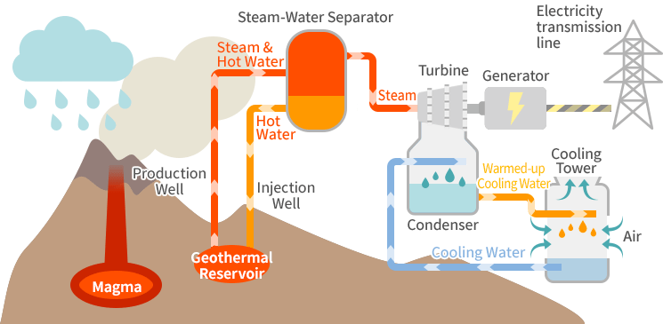

е обновлив извор на енергија која се добива од топлотата во земјата. Земјата има внатрешна топлина која потекнува од радиоактивни распади и од топлината што се задржува при формирањето на планетата. Оваа топлина може да се искористи за производство на електрична енергија или за греење и ладење на стаништата. Геотермалната енергија е чиста, стабилна и непрекината форма на енергија. За искористување на оваа енергија, не се испуштаат штетни емисии во атмосферата, што ја прави одлична алтернатива за намалување на зависноста од фосилни горива и за намалување на емисиите на јагленски гасови.
